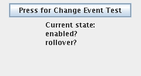
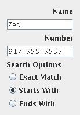
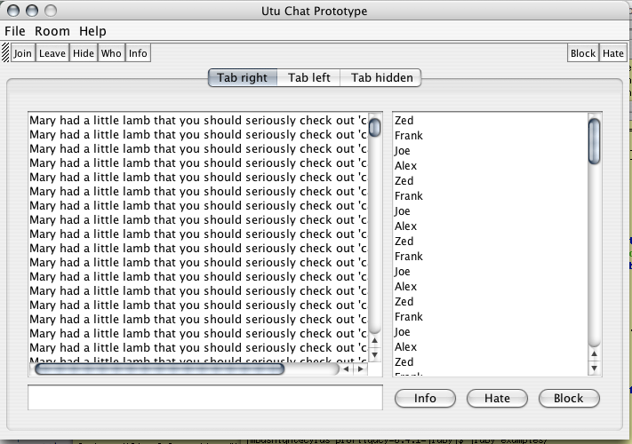

Profligacy
the world needs less swing
home
about Profligacy
docs
API and other info
sample
get the idea
LEL
cream for layouts
project
rubyforge project page
credit
people who helped
origins
what a stupid name
iHate...
uses this
How’s it used?
Profligacy is really easy to use, but you should still be referring to the Swing™ docs to learn how to actually use the components.
These examples are all in the project’s examples directory along with many others.
You should also check out the LEL instructions for a fully explained example using the Layout Expression Language.
The Book
These examples are translated from the book Swing: A Beginner’s Guide by Herbert Schildt and published by McGraw Hill.
What I did was translate the Java code examples to Profligacy and then cleaned them up so they are Ruby idiomatic. The new work is completely different looking compared to what’s in the book.
examples/swing1.rb
This example doesn’t really show off Profligacy but instead shows you what the raw Swing looks like with JRuby. As you can see it’s much nicer than doing it in Java already.
require 'java'
require 'profligacy/swing'
import 'javax.swing.JFrame'
import 'javax.swing.JLabel'
class SwingDemo
def initialize
jfrm = JFrame.new "A Simple Demo"
jfrm.setSize(275,100)
jfrm.default_close_operation = JFrame::EXIT_ON_CLOSE
jlab = JLabel.new " Swing powers the modern Java GUI"
jfrm.add jlab
jfrm.pack
jfrm.visible = true
end
end
SwingUtilities.invoke_later proc { SwingDemo.new }.to_runnable
examples/swing2.rb
This is the first example that uses Profligacy to build the Swing GUI, but which doesn’t use LEL to do the layout. Instead it just uses a plain FlowLayout to organize the components.

require 'profligacy/swing'
module Buttons
class ButtonDemo
include_package 'javax.swing'
include_package 'java.awt'
include Profligacy
def initialize
@ui = Swing::Build.new JFrame, :first, :second, :lab do |c,i|
c.lab = JLabel.new "Press A Button."
c.first = JButton.new "First"
c.second = JButton.new "Second"
i.first = { :action => proc {|t,e| c.lab.text = "First pressed." } }
i.second = { :action => proc {|t,e| c.lab.text = "Second pressed." } }
end
@ui.layout = FlowLayout.new
@ui.build("The Sample Layout").default_close_operation = JFrame::EXIT_ON_CLOSE
end
end
end
SwingUtilities.invoke_later proc { Buttons::ButtonDemo.new }.to_runnable
Notice also that you can use the to_runnable and the regular Ruby procs to do all your callbacks. This removes a huge amount of repetitive error prone Java code from doing listeners and runnables.
examples/swing3.rb
This example is a simple stop watch that shows how the callbacks
can also be method(:name) callbacks. What Profligacy does is anything
that’s registered as a callback has to_proc called on it. This means
if you pass in a proc, that gets called. If you pass in a method, it
gets converted to a proc.
This means that you can implement callbacks on other objects by simply
getting their method. The signature for the method should be method(type,event) with type being a symbol for the Java method that was called, and
event being the AWT Event object.

require 'profligacy/swing'
class StopWatch
include_package 'javax.swing'
import 'java.awt.FlowLayout'
include Profligacy
def initialize
@ui = Swing::Build.new JFrame, :start, :stop, :lab do |c,i|
c.start = JButton.new "Start"
c.stop = JButton.new "Stop"
c.lab = JLabel.new "Press Start to begin timing."
i.start = { :action => method(:start) }
i.stop = { :action => method(:stop) }
end
@ui.layout = FlowLayout.new
@ui.build("Stop Watch").default_close_operation = JFrame::EXIT_ON_CLOSE
end
def start(type, event)
@ui.lab.text = "Stopwatch is running..."
@time = Time.new
end
def stop(type, event)
if @time
@ui.lab.text = "#{Time.now.to_i - @time.to_i} seconds."
else
@ui.lab.text = "Start the watch first."
end
@time = nil
end
end
SwingUtilities.invoke_later proc { StopWatch.new }.to_runnable
The signature for methods has to be callback(type, event) and the
type is a symbol that represents the method name Java tried to call.
This lets you tailor the reactions based on the type without having
to dig into the event. It’s also necessary because the name and types
of the events are inconsistent from the method that’s called in Swing.
examples/swing4.rb
This example shows the real power of Ruby over Java. It’s dynamic
nature means you can crank out tons of readable functionality with
very little code. The Java version of this simply repeated
calls to new JLabel("Left, Top") and then use the exact same names
as constants to set that alignment.
In the Ruby example below, I use an array of symbols and then just simply construct both the label and the alignment from them.

require 'profligacy/swing'
class AlignLabelDemo
include_package 'javax.swing'
include_package 'java.awt'
include_package 'javax.swing.border'
include SwingConstants
include Profligacy
def initialize
border = BorderFactory.createEtchedBorder
@ui = Swing::Build.new JFrame, :labels do |c,i|
c.labels = [
[:LEFT, :TOP], [:CENTER, :TOP], [:RIGHT, :TOP],
[:LEFT, :CENTER], [:CENTER, :CENTER], [:RIGHT, :CENTER],
[:LEFT, :BOTTOM], [:CENTER, :BOTTOM], [:RIGHT, :BOTTOM]
].collect do |horiz,vert|
lab = JLabel.new "#{horiz},#{vert}", AlignLabelDemo.const_get(horiz)
lab.border = border
lab.vertical_alignment = AlignLabelDemo.const_get(vert)
lab
end
end
@ui.layout = GridLayout.new(3,3,4,4)
frame = @ui.build("Label Play")
frame.content_pane.border = BorderFactory.createEmptyBorder 4,4,4,4
frame.default_close_operation = JFrame::EXIT_ON_CLOSE
end
end
SwingUtilities.invoke_later proc { AlignLabelDemo.new }.to_runnable
This sample also shows you how, because Profligacy uses yield rather than instance_eval to have you build the components you can use the full power of Ruby to help build things. No need to worry about how the contents of this block is interpreted because it’s not.
examples/swing5.rb
This sample shows how you can access the components in the returned Swing::Build object in your callbacks. In this example we’ve saved a @ui object and then we simply reference the components by their names in the toggled callback. This helps organize and structure the code. Rather than flood the class with a mixture of UI component variables and variables that actually are needed for the UI’s logic, we just have them in a handy single location with consistent names.


require 'profligacy/swing'
class ToggleButtonDemo
include_package 'javax.swing'
include_package 'java.awt'
include_package 'javax.swing.border'
include Profligacy
def initialize
@ui = Swing::Build.new JFrame, :label, :button do |c,i|
c.label = JLabel.new "Button is off."
c.button = JToggleButton.new "On/Off"
i.button = { :item => method(:toggled) }
end
@ui.layout = FlowLayout.new
@ui.build("Toggle Demo").default_close_operation = JFrame::EXIT_ON_CLOSE
end
def toggled(type, event)
if @ui.button.selected?
@ui.label.text = "Button is on."
else
@ui.label.text = "Button is off."
end
end
end
SwingUtilities.invoke_later proc { ToggleButtonDemo.new }.to_runnable
You of course don’t have to do this at all, it’s just proven to reduce code repetition since you already named these variables in another place, used them there, and will need them again later.
No point then storing these components in variables again.
examples/swing6.rb
This sample simply shows handling various events from components. One thing that hasn’t been discussed is how you register a callback. The two variables passed to your block are the components and interactions (here done as c,i). You put components on the c variable and they get loaded into the layout and JFrame (or JPanel or any container) when you call build.
The interactions are just your proc or method that you attach to the i variable. The problem is many components have different callbacks that fire off. Some answer actionListener others answer changedListener. The solution is you attach a Ruby Hash that maps the action to the callback to make. You do as many as you want to handle, and when build is called they get appropriately translated.

require 'profligacy/swing'
class TwoTFDemo
include_package 'javax.swing'
include_package 'java.awt'
include_package 'javax.swing.border'
include Profligacy
def initialize
@ui = Swing::Build.new JFrame, :texts, :label do |c,i|
c.texts = [ JTextField.new(10), JTextField.new(10)]
c.texts.each_with_index {|t,n| t.action_command = "text#{n}" }
c.label = JLabel.new "Something will show up here."
i.texts = {:action => method(:text_action) }
end
@ui.layout = FlowLayout.new
@ui.build("Two Text Fields Demo").default_close_operation = JFrame::EXIT_ON_CLOSE
end
def text_action(type, event)
puts "EVENT: #{type} #{event.action_command}"
if event.action_command == "text0"
@ui.label.text = "ENTER pressed in first text"
else
@ui.label.text = "ENTER pressed in second text"
end
end
end
SwingUtilities.invoke_later proc { TwoTFDemo.new }.to_runnable
The way you figure out the symbol to use is from the Swing documentation. Swing uses a method signature of addSomethingListener. For :action it’s addActionListener. All you do is drop the add and Listener and what’s in the middle is what you set in the Hash. For example, if you had a component with an addJavaIsRetardedListener you’d use the symbol javaIsRetarded to set the callback.
Using Arrays Of Components
You should also notice another handy feature of Profligacy shown in demo swing6.rb. Notice this code:
...
c.texts = [ JTextField.new(10), JTextField.new(10)]
c.texts.each_with_index {|t,n| t.action_command = "text#{n}" }
...
When you set a component to an Array Profligacy assumes you want them to be added in order and to have the same callback applied to them all.
This cuts down on having to use tons of names in the builder for what’s
effectively the same component repeated. The alternative would be to have
a c.text1, c.text2, etc. It also saves you time since Profligacy
will take the i.texts = {:action => method(:text_action)} and apply
that same callback to all the components in that Array.
examples/swing7.rb
This sample shows more advanced callback handling and again shows how Ruby cleans up the code tremendously. The Java version had repetitive if/else blocks and nasty String construction to do the same thing. In Ruby we just use each and build the string we want on the fly.

require 'profligacy/swing'
class ChangeDemo
include_package 'javax.swing'
include_package 'java.awt'
include_package 'javax.swing.border'
include Profligacy
def initialize
@ui = Swing::Build.new JFrame, :button, :label do |c,i|
c.label = JLabel.new
c.button = JButton.new "Press for Change Event Test"
i.button = { :change => method(:change_check) }
end
@ui.layout = FlowLayout.new
frame = @ui.build("Change Demo")
frame.set_size(250,160)
frame.default_close_operation = JFrame::EXIT_ON_CLOSE
end
def change_check(type, event)
model = event.source.model
what = []
[:enabled?, :rollover?, :armed?, :pressed?].each do |test|
if model.send(test)
what << "#{test}<br>"
end
end
@ui.label.text = "<html>Current state:<br>#{what.join(" ")}"
end
end
SwingUtilities.invoke_later proc { ChangeDemo.new }.to_runnable
examples/swing8.rb
This is probably the most complex demo since it actually works as a phone book (although a really small one). No, that’s not my real number.
Again this shows how Ruby just destroys the complexity in these GUIs. By using a case/when block and built-in regex usage we can just do the lookup in about 4 lines of code.

require 'profligacy/swing'
class PhoneBookDemo
include_package 'javax.swing'
include_package 'java.awt'
include_package 'javax.swing.border'
include Profligacy
def initialize
children = [:lab_name, :name, :lab_number, :number, :lab_options,
:ignore_case, :exact, :starts, :ends]
@search_style = :exact
@ui = Swing::Build.new(JFrame, *children) do |c,i|
c.lab_name = JLabel.new "Name"
c.lab_number = JLabel.new "Number"
c.lab_options = JLabel.new "Search Options"
c.name = JTextField.new 10
c.number = JTextField.new 10
c.exact = JRadioButton.new("Exact Match", true)
c.starts = JRadioButton.new("Starts With")
c.ends = JRadioButton.new("Ends With")
b = ButtonGroup.new
[c.exact, c.starts, c.ends].each {|x| b.add(x) }
i.name = {:action => proc {|t,e| @ui.number.text = find(@names, e.source.text) } }
i.number = {:action => proc {|t,e| @ui.name.text = find(@numbers, e.source.text) } }
i.exact = {:action => proc {|t,e| @search_style = :exact } }
i.starts = {:action => proc {|t,e| @search_style = :starts } }
i.ends = {:action => proc {|t,e| @search_style = :ends } }
end
@ui.layout = GridLayout.new 0,1
@ui.build("Phone Book").default_close_operation = JFrame::EXIT_ON_CLOSE
@names = {
"Zed A. Shaw" => "917-555-5555",
"Frank Blank" => "212-554-5555"
}
@numbers = {
"917-555-5555" => "Zed A. Shaw",
"212-554-5555" => "Frank Blank"
}
end
protected
def find(inside, text)
results = case @search_style
when :exact; inside.keys.grep /^#{text}$/
when :starts; inside.keys.grep /^#{text}/
when :ends; inside.keys.grep /#{text}$/
end
inside[results[0]] || ""
end
end
SwingUtilities.invoke_later proc { PhoneBookDemo.new }.to_runnable
examples/swing8_lel.rb
The last sample is the first demonstration of using LEL, but also an example of when you might not what to use Swing::LEL compared to Swing::Build. In this case, the code is almost the same and the results are nearly the same.

What you can see is that the layout has a bit more flavor to it, with components right justified, filled out, and better spacing. This is the primary advantage of LEL in this situation. It allows you to tweak and make the layout look nicer. It’s also better when the layout gets more complex.
However, don’t bother using LEL when a simple FlowLayout might work instead. Use the right tool for the job. See the LEL instructions for a good example of something that’s infinitely easier with LEL.
require 'profligacy/swing'
require 'profligacy/lel'
class PhoneBookDemo
include_package 'javax.swing'
include_package 'java.awt'
include_package 'javax.swing.border'
include Profligacy
def initialize
@search_style = :exact
layout = "[>lab_name][*name][>lab_number][*number][*lab_options][<exact][<starts][<ends]"
@ui = Swing::LEL.new(JFrame, layout) do |c,i|
c.lab_name = JLabel.new "Name"
c.lab_number = JLabel.new "Number"
c.lab_options = JLabel.new "Search Options"
c.name = JTextField.new 10
c.number = JTextField.new 10
c.exact = JRadioButton.new("Exact Match", true)
c.starts = JRadioButton.new("Starts With")
c.ends = JRadioButton.new("Ends With")
b = ButtonGroup.new
[c.exact, c.starts, c.ends].each {|x| b.add(x) }
i.name = {:action => proc {|t,e| @ui.number.text = find(@names, e.source.text) } }
i.number = {:action => proc {|t,e| @ui.name.text = find(@numbers, e.source.text) } }
i.exact = {:action => proc {|t,e| @search_style = :exact } }
i.starts = {:action => proc {|t,e| @search_style = :starts } }
i.ends = {:action => proc {|t,e| @search_style = :ends } }
end
@ui.build(:args => "Phone Book")
@names = {
"Zed A. Shaw" => "917-555-5555",
"Frank Blank" => "212-554-5555"
}
@numbers = {
"917-555-5555" => "Zed A. Shaw",
"212-554-5555" => "Frank Blank"
}
end
protected
def find(inside, text)
results = case @search_style
when :exact; inside.keys.grep /^#{text}$/
when :starts; inside.keys.grep /^#{text}/
when :ends; inside.keys.grep /#{text}$/
end
inside[results[0]] || ""
end
end
SwingUtilities.invoke_later proc { PhoneBookDemo.new }.to_runnable
examples/layout_test.rb
To see this example, go to the LEL instructions which is also a great step-by-step set of instructions for using LEL and Profligacy.
MY GOD THAT’S SO UGLY!
Alright, calm down moron. Yes, 10 years ago AWT and Swing were ugly as hell. Now they have these things called “look-and-feel” plugins that make it look however you want. Drag your head out of your tightly clinched ass, update your damn information, and take a look at a few screenshots here:

That’s what just a raw prototype GUI looks like on OSX. Still using the native buttons, still looks pretty close to normal, just a few tweaks and Apple specific settings needed to improve it and keep the Jobsians happy.
Here’s a LAF called Substance that’s in default mode:

This one is very configurable, and if you want to try it you have to do the following:
- Grab the substance.jar.
- export CLASSPATH=.:substance.jar
- jruby -J-Dswing.defaultlaf=org.jvnet.substance.SubstanceLookAndFeel -Ilib examples/utu_main.rb
The utu_main.rb file is now included in the examples directory of the profligacy.gem.
So, quit your whining, you can make it look however you want.